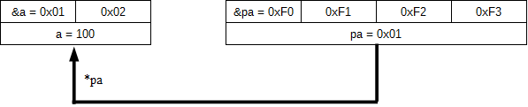

アクティビティ: C言語のポインタ
学習項目: [4] 変数とポインタ変数
ではいよいよ「ポインタ変数」について学んでいきましょう。
ポインタ変数とは何か？を一言で表すと以下のようになります。
アドレス値(番地)を保存する変数
まずはこれが全ての大前提になりますので覚えましょう(※)。
※ やたら難しくポインタ変数を説明している解説が多いのですが、ポインタ変数はこれ以上の物でもこれ以下の物でもありません。
それでこのポインタ変数にアドレスを入れておけば、CPU にそのアドレスにあるデータを使って何かしなさいとプログラム内で命令できるようになります。
ではまずポインタ変数の定義方法から説明します。
定義の仕方は簡単で、普通の変数のようにまずデータ型を書いた後にポインタ変数名の前に * を付けるだけです。
データ型 *ポインタ変数名;
(例) char *pa; とか int *pb;
※1 変数名の前に付いている p は pointer の意味です。
変数名の前に p を付けないと駄目という決まりは特にありませんが付けておくと分かりやすいです。
※2 ポインタ変数はアドレスを入れる変数なのでポインタ変数自体のデータサイズは使用するシステムのメモリ空間の広さ(＝アドレスの桁数)で決まります。
つまり char * 型だろうが int * 型だろうがポインタ変数のデータサイズは同じです。
詳しくは アドレス演算子の使い方の所で書いた内容を読んで下さい。
さて、定義する時にデータ型をわざわざ指定する必要がある理由は次の通りです。
プログラムを実行する CPU からすると、何か適当なポインタ変数を与えられ、そのポインタ変数によって指定されたアドレスにあるデータを使えと命令されても、そのデータが何型の変数のデータなのか分からないのでどうしようもありません(図1)。
図1: ポインタ変数 pa に 0x01 が入っていて、CPU に pa 番地にあるデータを使って何かしろと命令しても・・・ (メモリの中の値は略)
| 0x00 | 0x01 | 0x02 | 0x03 | 0x04 | 0x05 |
| 略 | ？ | 略 | 略 | 略 | 略 |
→ pa = 0x01 番地にあるデータが何型のデータなのか CPU は分からない！
そこでポインタ変数を定義する時にデータ型を指定することでこの変数が何型のデータなのか CPU に知らせます(図2、図3)。
そうすることで CPU がそのアドレスにあるデータが何型のデータなのか分かるので、そのデータを利用することが出来るようになります。
図2: もし short *pa; と pa が定義されていたら・・・
| 0x00 | 0x01 | 0x02 | 0x03 | 0x04 | 0x05 |
| 略 | short型データ | 略 | 略 | 略 | |
→ pa = 0x01 番地にあるデータは 2 バイトの short 型だ！
図3: もし int *pa; と pa が定義されていたら・・・
| 0x00 | 0x01 | 0x02 | 0x03 | 0x04 | 0x05 |
| 略 | int型データ | 略 | |||
→ pa = 0x01 番地にあるデータは 4 バイトの int 型だ！
次に、ポインタ変数にアドレス値を代入する方法は以下の 3 つです。
(1) アドレス値を直接代入
(2) アドレス演算子を使って変数のアドレスを代入
(3) 配列の先頭アドレスを代入
このうち、(1) の方法はデバッグ時には良く使いますがあまり一般的ではないので今回は取り扱いません。
また(3)の方法は次の学習項目で取り扱いますので、ここでは(2)の方法について具体的に説明します。
ポインタ変数 = &変数名
(例) ※ポインタ変数に指定する型と変数の型は合わせる必要があります short a; ahort *pa; pa = &a;
なお、この様にしてポインタ変数に変数のアドレスを代入することを「ポインタ変数に変数を参照させる」と言って、図では矢印で参照を表す場合が多いです。
例えば上の例の short 型のポインタ変数 pa に short 型の変数 a を参照させた時のメモリ空間の状態が次の図 4 です。
short a = 100; // OS が 0x01 番地(※1)から 2 バイト分を a の領域とする short *pa; // OS が 0xF0 番地(※1)から 4 バイト分(※2)を pa の領域とする a = 100; // a に 100 を代入する pa = &a; // pa に a のアドレス、つまり今回は 0x01 を代入する
※1. 例なのでアドレス値は適当に決めています。
実際には OS がアドレスを決めます。
※2. 例なのでポインタ変数のデータサイズは 4 バイトにしていますが、実際には上の「ポインタ変数の定義方法」で書いた様にシステムによってポインタ変数のデータサイズは変わります。
ここで図 4 の矢印の先頭付近にある「*pa」の「*」は「間接演算子」又は「間接参照演算子」と言って、この演算子とポインタ変数を使って矢印の先にある変数の値を取得したり、値を代入したりする事が出来ます。
ポインタ変数を使って参照先の変数の値を取得したり値を代入出来る
*ポインタ変数名
(例) メモリ空間が図 4 の状態になっているなら
printf("%d\n", *pa ); ・・・ a の値(=100)を表示する
*pa = 1; ・・・ a に 1 を代入する